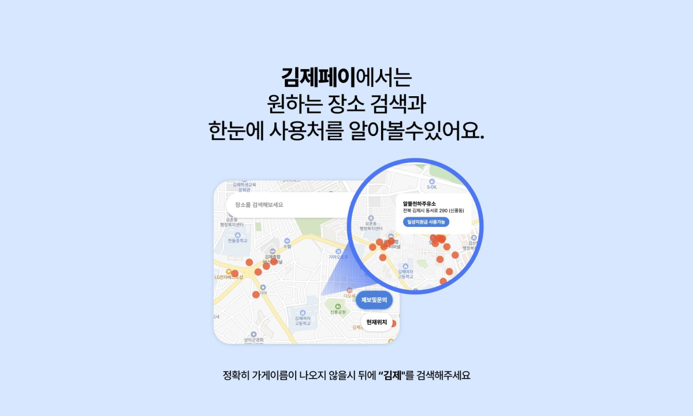
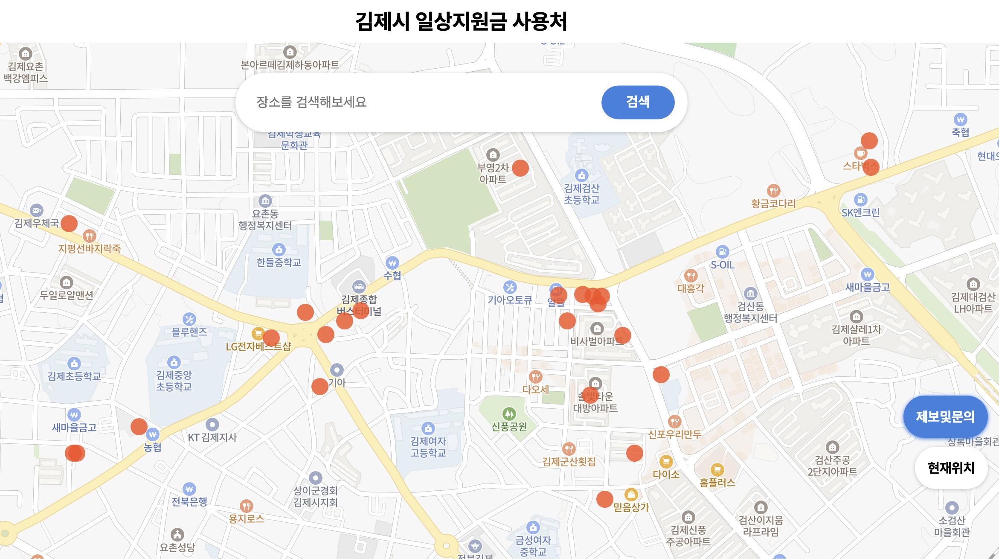

×



디자인으로 시작해 마케팅을 거쳐,
지금은 데이터를 통해 세상을 이해하는 법을 배우고 있어요.
비록 작은 일을 하더라도 결국 의미 있는 결과를 만들 수 있다고 믿습니다.
작은 손길로 시작된 무언가가 세상에 울림을 만들 수 있기를.
서비스 출시 후 도출된 유저 반응에 대한 호기심이 커져 마케터를 공부를 시작 했어요.
트렌디한 디자인 레퍼런스를 빠르게 찾아 적용하며, 협업 과정에서 효율적인 작업 방식을 만드는 것을 중요하게 생각해요.
동료들이 어려워하는 부분을 정리하고 규칙을 만들어, 신속하고 체계적으로 업무를 수행하는 스타일을 선호해요.
정해진 틀 안에서만 작업하는 것이 아니라, 새로운 해결책을 찾아내고 최적화하는 과정에서 보람을 느껴요.
동료들과 지식을 공유하고 배우는 것을 즐기며, 문제를 개선하고 더 나은 결과를 만들어내는 과정에서 업무의 재미를 찾아요.
작은 아이디어를 의미 있는 프로젝트로.
디자인과 마케팅 경험을 바탕으로,
관심 있는 개발 분야까지 한 걸음씩 확장해가고 있어요.
김제페이:일상회복지원금 사용처를 한눈에!
김제시에서 지원하는 일상회복지원금의 사용처를 한눈에 볼수있게 지도서비스를 제작
200년 전으로 돌아가게 된 당신...
5개의 질문을 통해 당신의 전생 모습을 찾아보세요!
Nullz 핫크리에이터 등극 & 널즈(Nulz) 파트너 크리에이터 활동
청년마케터 서포터즈 대외활동
SilentMonster 창업
프리랜서 디자인 작업물
Marketing Team leader 2025.10 - ing
- 메타 광고 콘텐츠 운영 기획, AI 활용 및 광고 제작
- 광고 퍼포먼스를 분석하여 타겟팅 전략 개선 및 예산 효율 극대화
- 광고 효율 극대화를 위한 A/B 테스트 와 CTR개선 및 CPM 효율 최적화
- 캠페인 운영 및 성과 보고
Marketing freelancer 2025.02 - 06
- 마케팅 전략 설계 및 실행, 주요 A,B 캠페인 관리로 회사의 온라인 존재감 강화
- 메타 광고집행을 위한 홈페이지 와이어프레임 설계
- 메타 광고 캠페인 집행 및 성과 분석
- UTM 및 Google Analytics 관리 저예산 최적화
- 다양한 캠페인 설계 및 콘텐츠 기획, 타겟/논타겟 맞춤형 캠페인 실행
Internship 2024.07 - 09
- 프로필 카드 UX/UI 디자인을 통해 사용자 인터페이스 개선 및 고객 만족도 향상
- 메타 광고 캠페인 집행 및 성과 분석
- 이벤트 랜딩페이지 제작으로 참가자 수 증대 및 브랜드 인지도 확장
- 콘텐츠 기획 및 제작을 통해 2달간 상위 고객 전환
Growth marketing Team Designer 2023.07-24.05
- 60개 이상의 연구소의 브랜딩 디자인 작업으로 브랜드 이미지 통일성 강화
- 블로그 및 아티클 썸네일 디자인으로 콘텐츠 조회수 및 방문자 수 증가
- 랜딩페이지 제작으로 참가자 수 증대 및 브랜드 인지도 확장
- 사내 피그마 원데이 클래스를 통해 팀원들의 사용 툴 강화 및 효율적인 협업
Designer 2023
- 테크엠 3주년 행사 디자인(무대 그래픽, 배너, 사이니지 등) 전체적인 디자인
- 비들아시아, 이드서울, Groove Connection Vol.2, 폴카닷해커톤 등 작업
- 행사 관련 디자인(현수막, 배너, 명찰 등)을 통해 행사 브랜드 제작
Designer 2021.04 - 2022.01
- 패키지, 현수막, 브로슈어, 명함, 로고 등 다양한 브랜드 제작 주요 담당
- 클라이언트와의 협업을 통해 요구사항을 정확히 반영한 결과물 제공
졸업 (2018년 02월)
University of Minnesota (2022년 10월 7일)
Google (2022년 12월 2일)
(2022년 09월 1일 - 10월 31일)
(2023년 03월 05일)
(2024년 11월 20일 - 2025년 2월 28일)
(2024년 05월 25일 - 2025년 2월 28일)
(2025년 5월 10일)
(2025년 11월 05일)
저와 함께 일했던 사람들이 저를 이렇게 기억해줬어요!
If I had to describe her in one word, it’d be pathfinder.
She’s the kind of marketer you want on your team if you’re facing a tough challenge or need someone
who can really think things through and make things happen.
I worked with her for 6 months on a new product launch, and she gave it everything she had. She
brought so much passion, wasn’t afraid to try new things, and always stayed honest and bold.
What I really appreciated was how seriously she took our go-to-market strategy—not just doing what
was handed to her.
No doubt, if I get the chance to work with a marketer again, she’s the first person I’d call.
성장의 의지가 강하며 학습능력도 뛰어납니다.
직무에서의 팔로업도 정확한 디렉션을 제시하면 의도대로 칼같이 잘 만들어서 고객의 니즈에 맞춰줍니다.
업무 속도도 빠른 편이여서 오히려 저희가 제안하는것이 느리다고 생각이 들 정도로 시원시원합니다.
이 외 여러가지 이유로 추천합니다.
양식에 맞춰 내용을 작성해주시면,
24시간 이내 이메일로 연락드리겠습니다.